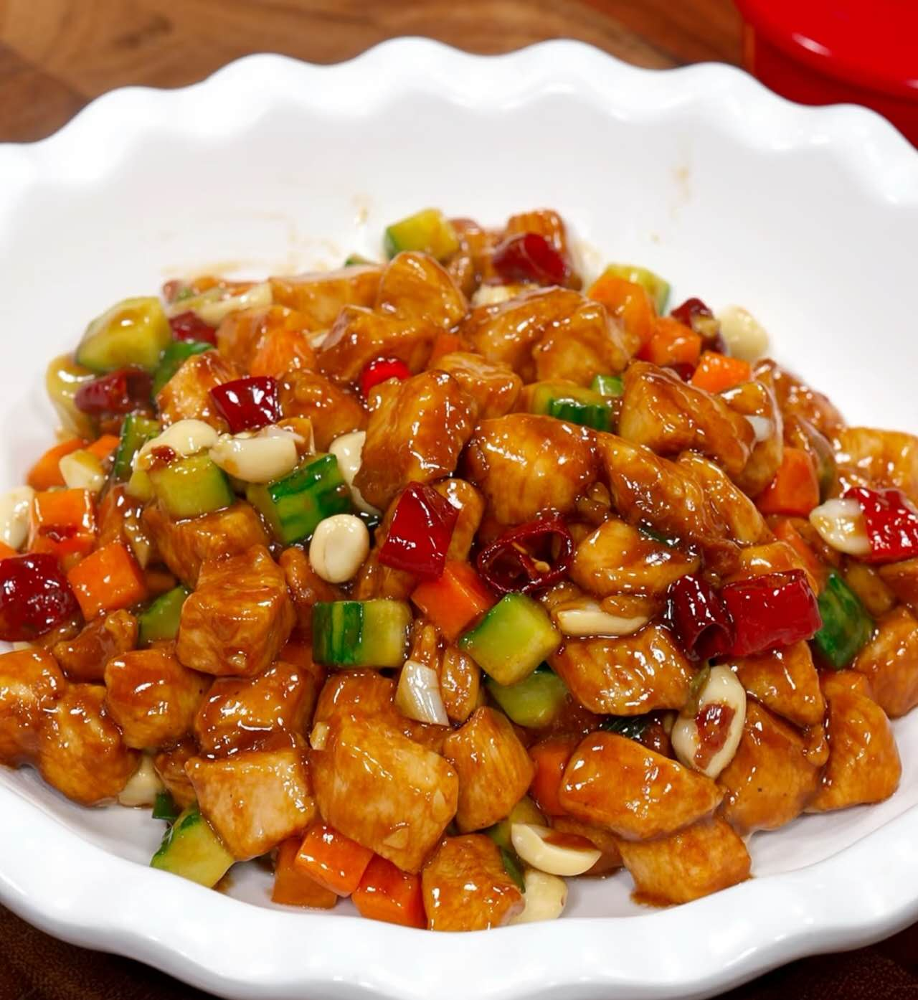
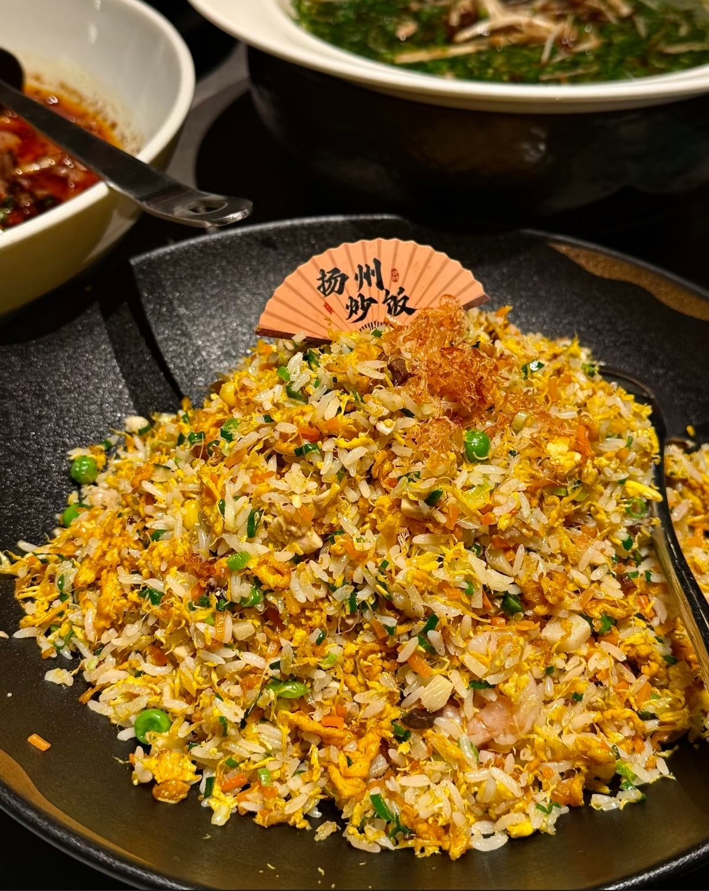
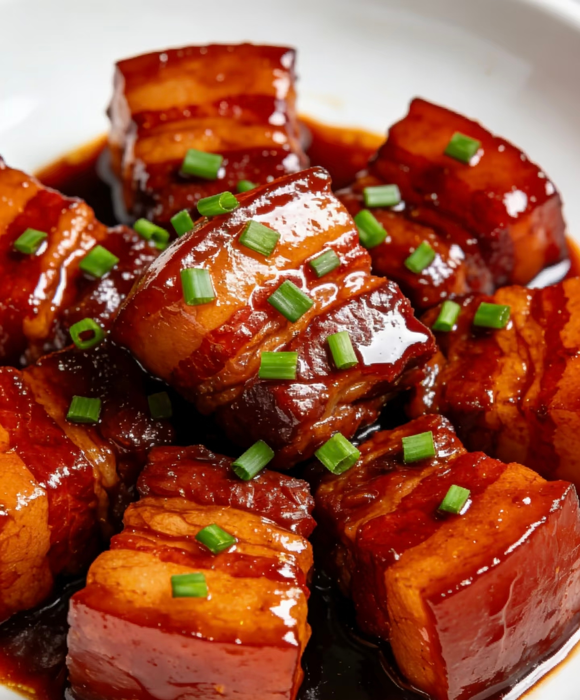

CLASSIC FAVORITE
Dumplings
Homemade dumplings filled with savory ingredients and wrapped with care.
View Recipe →FROM OUR KITCHEN
Simple Chinese home cooking made with familiar ingredients, comforting flavors, and a little story behind every dish.
CLASSIC FAVORITE
Homemade dumplings filled with savory ingredients and wrapped with care.
View Recipe →
HOME COMFORT
Juicy tomatoes and soft scrambled eggs come together in a simple everyday favorite.
View Recipe →
WARM & SPICY
Soft tofu served in a rich, savory, and gently spicy sauce full of comforting flavor.
View Recipe →
SWEET & SAVORY
Tender chicken with peanuts and a flavorful balance of savory, sweet, and spicy notes.
View Recipe →
QUICK & EASY
A quick and satisfying rice dish perfect for turning simple ingredients into a complete meal.
View Recipe →
SLOW & COMFORTING
Tender pork slowly cooked in a rich savory sauce for a warm and comforting meal.
View Recipe →